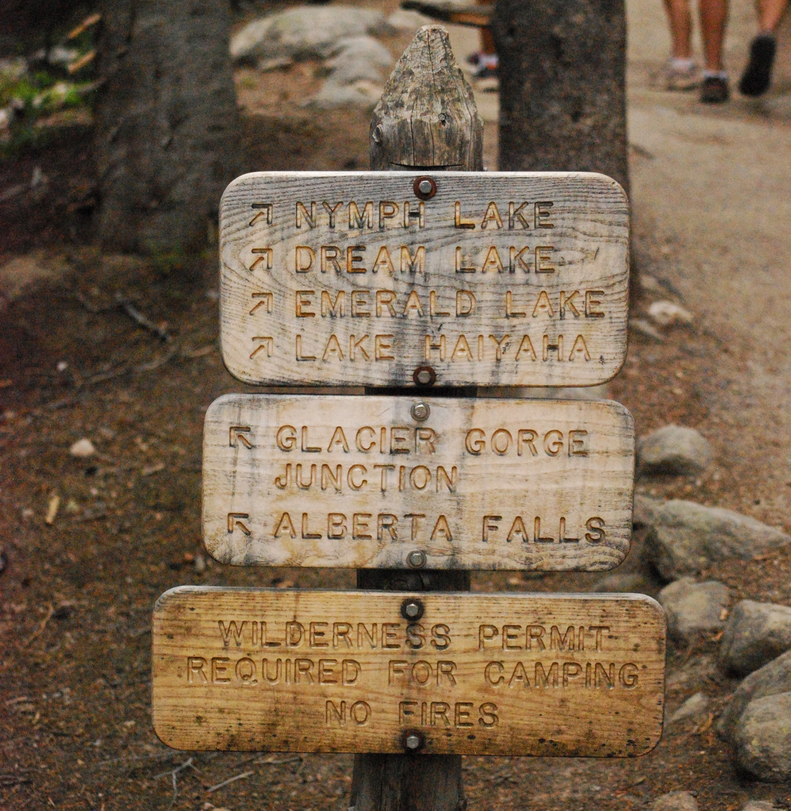
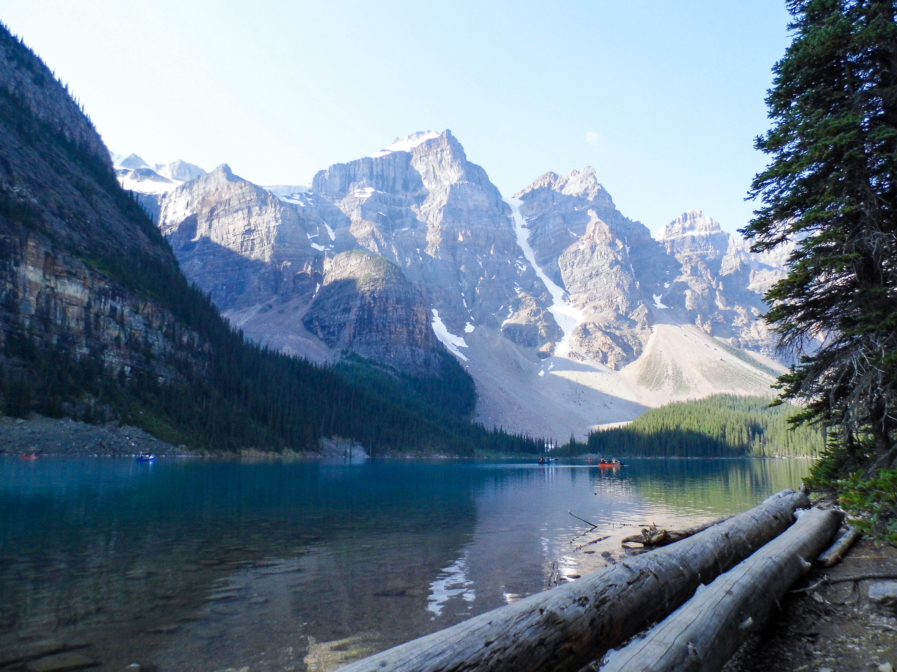
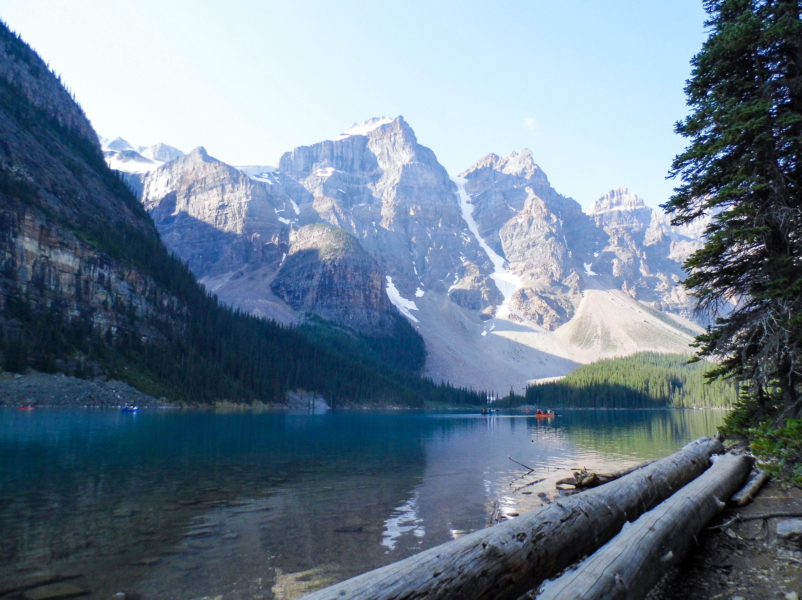

Time to Explore!
The spots that you see here were chosen by how difficult the hike is to get to each beautiful waterfall.


Beginning at the Glacier Gorge Trailhead, you only need to walk about 0.8 miles to reach this 30-foot waterfall. Alberta Falls is a gorgeous area to hike up to and have a picnic lunch while listening to the rushing water crash on the rocks below. There are many large rocks for seating areas all along the trail, and there isn't a bad view of these falls to be found.

These falls are located on the less-visited west side of the park, making it a more secluded hike. Beginning at the East Inlet Trailhead by Grand Lake, hike only about a third of a mile to reach these thundering falls. Adams Falls is the perfect place to find gorgeous wildflowers in early summer and another perfect picnic-lunch location.


Just past The Loch, these falls launch over a slab of shining black granite. Many people visit these falls on the journey to Sky Pond, but the waterfall should be a destination of its own, with a spectacular view of The Loch and the valley below. Just over 4 miles past the Glacier Gorge Trailhead, you'll reach the base of the majestic Timberline Falls, which towers roughly 100 feet.


Although this is a moderate to difficult hike, it is well worth it. Ribbon Falls are the outlet of Black Lake, a high-altitude glacial lake sitting above the more popular Mills Lake and Jewel Lake. On the way to Ribbon Falls, there are also a few smaller trickling waterfalls that add to the beauty of this hike. Located about 4.6 miles from Glacier Gorge Trailhead, these serene falls lie at the top of an open meadow, which feeds into a small river that flows along the trail.
 

Sometimes you have to adventure out to find the hidden beauty of places such as Granite Falls. Starting from the Green Mountain Trailhead on the west side of the Park, you'll hike about 5 miles to reach the base of this 50-foot waterfall. The water rolls down several tiers of slick granite and hikers should use caution when walking along the water. Granite Falls is a grand place for spectacular views and solitude in nature.
Testimonials
What other people thought of the spots they saw and their stay in Colorado.
@X_(Mark)s_the_spot - Wow this place is so beautiful. So asthetically pleasing and I would 10/10 recommned to a homeboy!
@MynameJEFF - Wow My Name is El Jeffe and this place is amazing. Never been so pleased with the establishment and exposure to the wilderness is amazing too.
@Drizzy_Drake - Drizzy loves this place. Waterfalls are a thing of peace and we could all use some of that in our lives.
@WeezyF_Baby - Hahahaa... WEEZYYY!! Mannnnee this place is outta this world. Aye @nicki_minaj you trynna kick it here for our next show out here.
Resting Places!
Don't Stress We've Got A Place For You To Rest!!